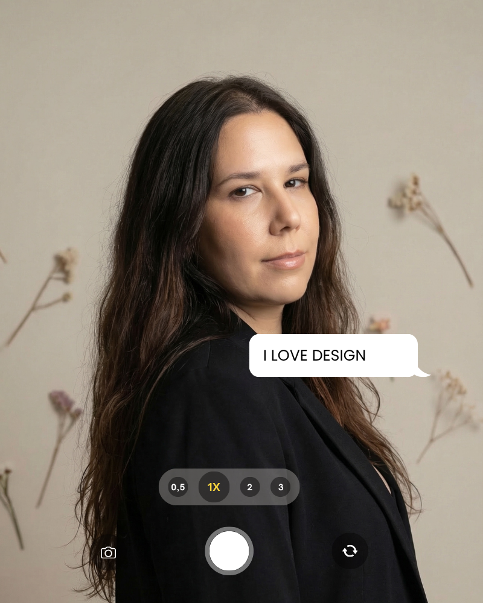
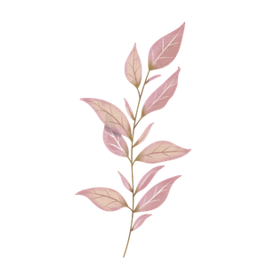
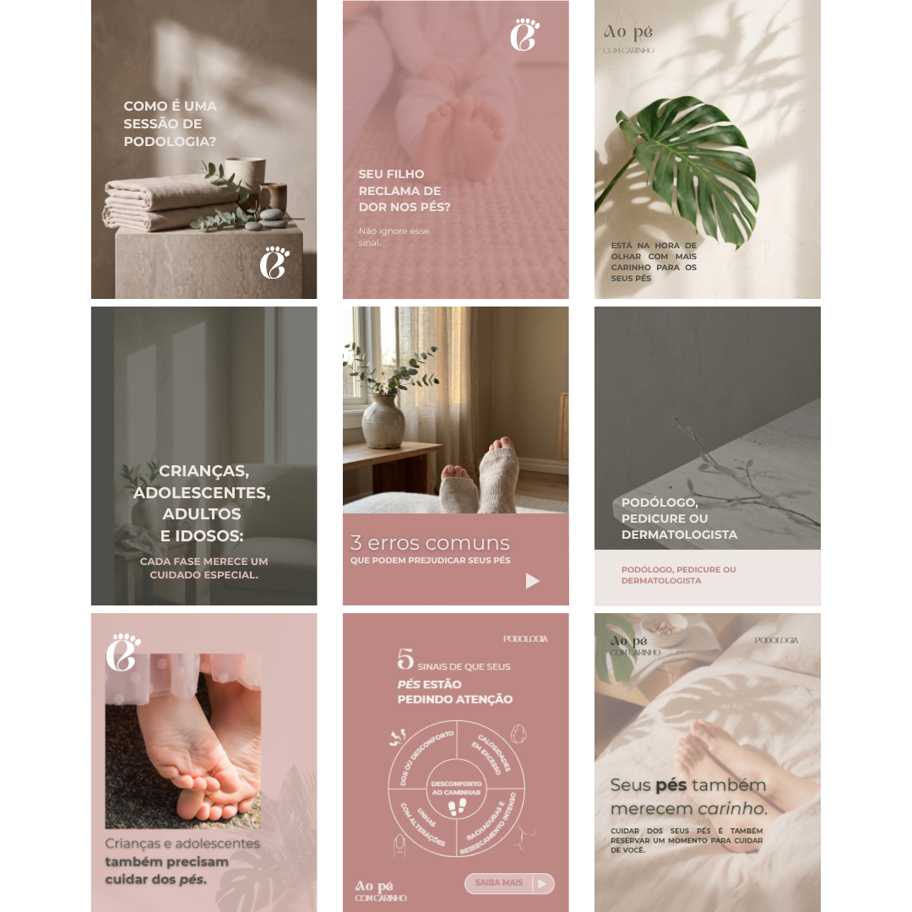
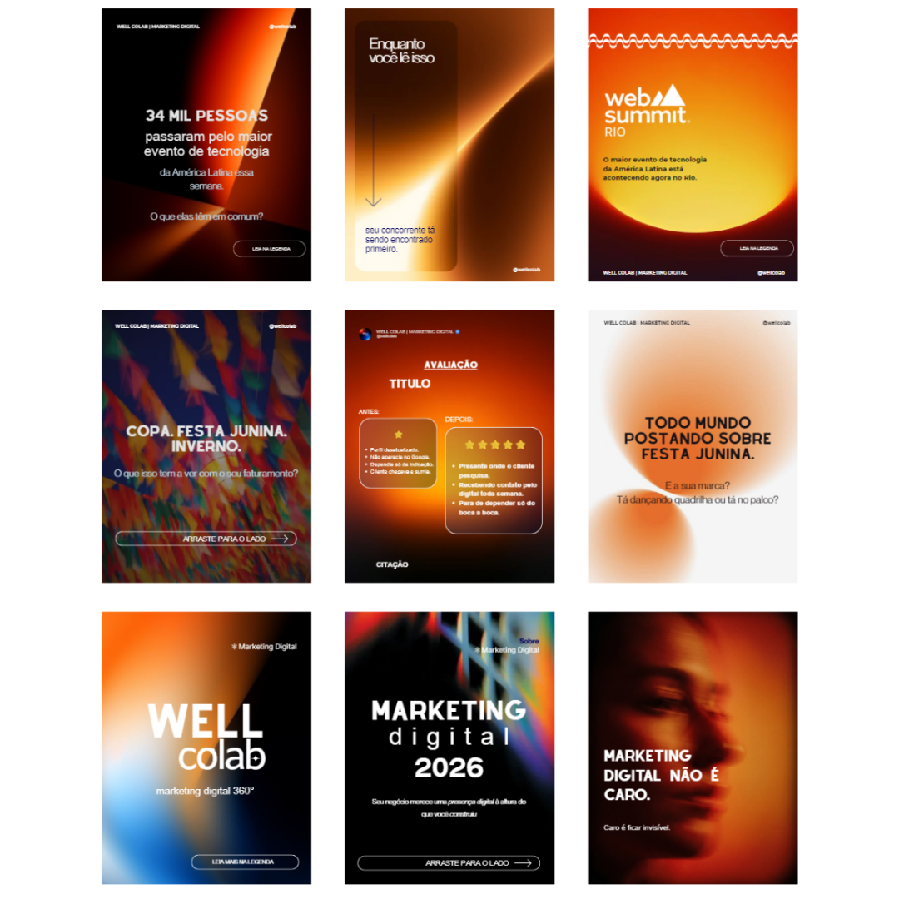
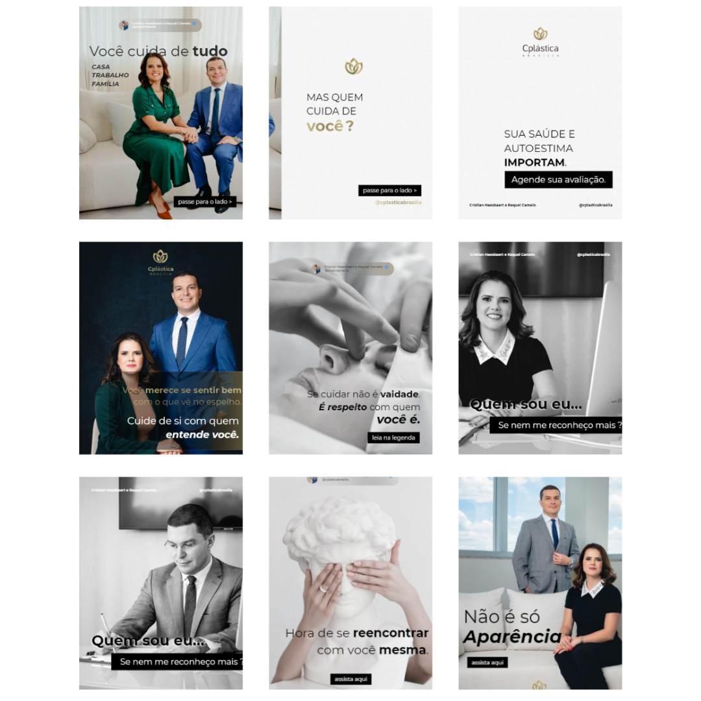
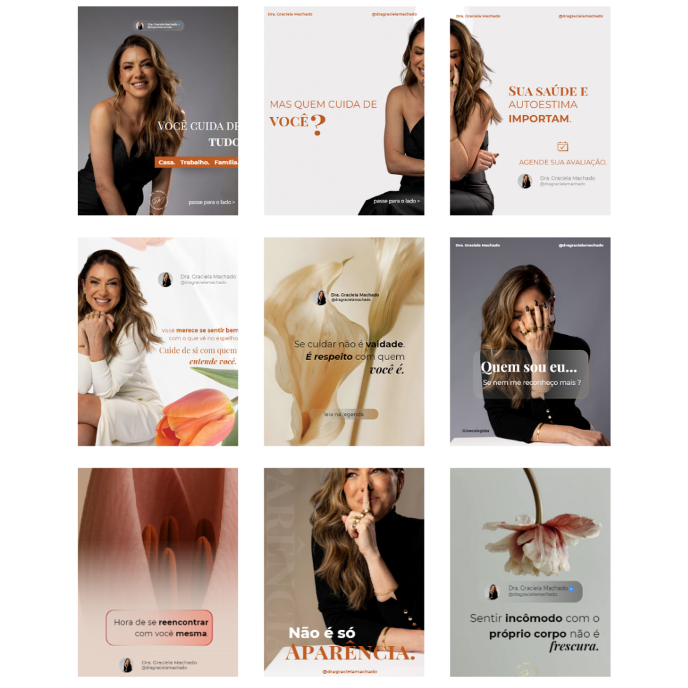
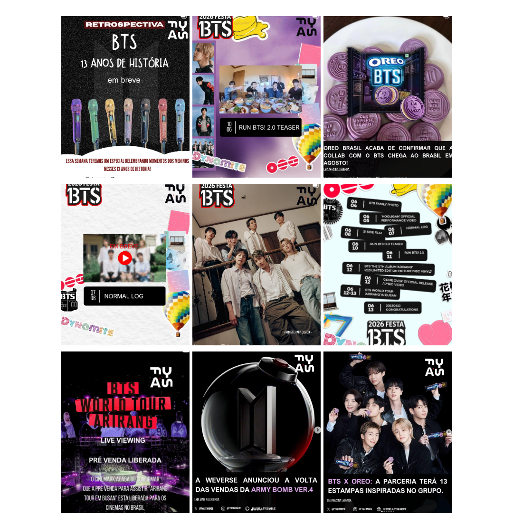

Artemis II
Identidade visual e conceito gráfico para missão espacial, alinhando rigor técnico e estética imersiva.
Ver no Behance →Designer com foco em identidades de marca, interfaces digitais e ecossistemas visuais que combinam delicadeza estética, técnica e propósito funcional.


Atuo no cruzamento entre sensibilidade visual e execução técnica. Crio universos de marca, interfaces e projetos digitais que unem tipografia refinada, paletas aconchegantes e estrutura escalável.
Soluções visuais, engenharia visual e implementação
Identidades visuais e projetos editoriais de marca
Identidade visual e conceito gráfico para missão espacial, alinhando rigor técnico e estética imersiva.
Ver no Behance →Ecossistema de marca completo: branding, interface (UI) e direção estratégica para redes sociais.
Ver no Behance →Construção de marca e sistema gráfico unificado para posicionamento institucional de agência.
Ver no Behance →Identidade de marca e estudo de caso de UI temático, integrando cafeteria artesanal e tipografia coreana.
Ver no Behance →Desenvolvimento de layouts institucionais e interfaces funcionais
Estruturação visual e implementação de website institucional focado em autoridade, clareza e captação.
Interface digital com visual orgânico, pensada para navegação intuitiva de catálogo e produtos.
Curadoria visual, harmonia de cores e identidade para marcas





Disponível para projetos de identidade visual, interfaces, desenvolvimento web e consultoria criativa.